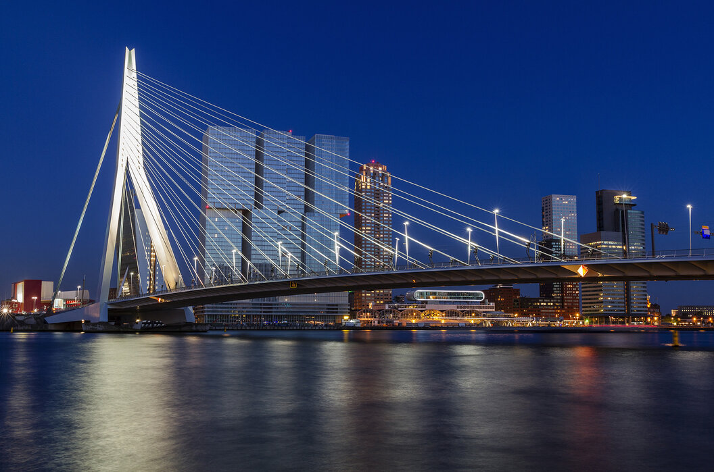

Rotterdam
Markthal
A Markthal nemcsak fedett piac, hanem építészeti remekmű is, amely a modern Rotterdam jelképévé vált. Az íves épület belsejében friss termékeket, ínyenc fogásokat és helyi specialitásokat kínáló standok találhatók. A mennyezetet Arno Coenen hatalmas, színes freskója díszíti, amely gyümölcsöket, zöldségeket és virágokat ábrázol. A gasztronómia szerelmesei számára kihagyhatatlan úti cél.


Erasmus-híd
Az Erasmus-híd, vagyis a "Hattyú", Rotterdam modern építészetének egyik legismertebb szimbóluma. A 800 méter hosszú híd a város központját köti össze a déli résszel, és különösen gyönyörű látványt nyújt az esti órákban, amikor kivilágítják. A híd nemcsak közlekedési útvonal, hanem helyszíne kulturális eseményeknek, például futóversenyeknek és ünnepi felvonulásoknak.
Euromast
Az Euromast Rotterdam legmagasabb kilátótornya, amely 185 méteres magasságával lélegzetelállító panorámát kínál a városra és a környező tájra. A látogatók üvegfalú lifttel juthatnak fel a torony tetejére, ahol étterem és kávézó várja őket. A kalandvágyók akár kötélen is leereszkedhetnek a torony oldaláról, különleges élményt kínálva a bátrabbak számára.